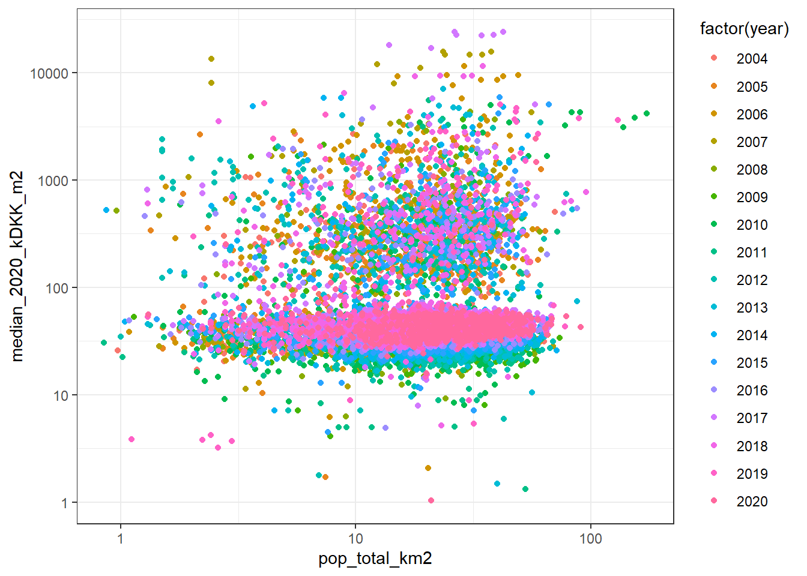

Chapter 3 Copenhagen region
We focus the study on Copenhagen (muni_id = 0101) and Frederiksberg (muni_id = 0147) municipalities (Figure 3.1A), and we make the analysis at a scale of grid cells of 100m x 100m (Figure 3.1B).
# Communes polygons of Denmark, and select those in the study area
dk_country <- st_union(dk_muni)
# Codes of the communes under study (KOMKODE)
study_area_codes <- c("0101", "0147")
# Select municipalities under study
cph_muni <- dk_muni %>% filter(muni_id %in% study_area_codes)
# Parishes polygons of Denmark, and select those in the study area
parish_link <- paste(loc_dir,
"DAGIREF_SHAPE_UTM32-EUREF89/ADM",
"SOGN.shp",
sep = "/")
dk_parish <- read_sf(parish_link) %>%
st_zm() %>%
st_transform(crs = "EPSG:25832")
# Select those where the centroid is in the study area
dk_parish_cent <- st_centroid(dk_parish)
cph_parish_cent <- st_intersection(dk_parish_cent, cph_muni)
cph_parish <- filter(dk_parish, SOGNEKODE %in% cph_parish_cent$SOGNEKODE) %>%
# Combine several parish features geometries into one polygon
group_by(SOGNEKODE, SOGNENAVN) %>%
summarise(geometry = st_union(geometry)) %>%
ungroup() %>%
# add area of the parish (in km2)
mutate(prsh_area_km2 = as.numeric(units::set_units(st_area(.), km^2)))
# Contour of the study area (merge the parishes in one polygon):
study_area <- cph_parish %>%
st_union() %>%
st_sf() %>%
st_transform(crs = "EPSG:25832")
# Make grid cells of 100m x 100m
grids100m <- study_area %>%
# Make regular grids (100m x 100m)
st_make_grid(cellsize = 100) %>%
st_sf() %>%
# Select grids only in the study area
mutate(int = st_intersects(., study_area) %>% lengths > 0) %>%
filter(int == TRUE) %>%
select(-int) %>%
# Name grids as "g001", "g002", ...
mutate(grid_ID = paste0("g", stringr::str_pad(seq(1, nrow(.), 1), 3, pad = "0")))
# Centroids of the grid cells (for Potential Model)
grids100m <- grids100m %>%
# Nesting
nest(data_poly = everything()) %>%
# add centroids of the grids
mutate(data_points = map(data_poly, st_centroid))# Plot parish in the study area
p1 <- ggplot() +
geom_sf(data = cph_muni, fill = "grey", color = "grey50", size = 0.05) +
my_theme_map() +
labs(title = "A) Municipalities")
# Plot grids
p2 <- ggplot() +
geom_sf(data = cph_muni, fill = NA, color = "grey50", size = 0.05) +
geom_sf(data = grids100m$data_poly[[1]],
fill = NA,
color = "red",
size = 0.05) +
my_theme_map() +
labs(title = "B) Grid cells of 100m x 100m") +
annotation_scale(location = "br", text_cex = 1) +
annotation_north_arrow(location = "br",
pad_x = unit(1.30, "cm"),
pad_y = unit(0.65, "cm"),
which_north = "true",
height = unit(0.5, "cm"),
width = unit(0.5, "cm"),
style = north_arrow_orienteering(text_col = "white",
text_size = 1))
# Plot
p1 + p2Figure 3.1: Copenhagen and Frederiksberg municipalities
3.1 Population density by grid cells of 100m x 100m
We disaggregate therefore population data at municipality level to the grid cells of 100m x 100m (i.e. 10786 grid cells in the study area) using all residences for year-round living (ENH_ANVEND_KODE) (i.e. from the Building and Dwelling Register - BBR as ancillary data. We also removed from the dataset those dwellings that are not actually used for residential purpose (i.e. BOLIGTYPE_KODE \(\neq\) E - Andet (bl.a. institutioner og erhverv) or BOLIGTYPE_KODE \(\neq\) 5 - Sommer-/fritidsbolig) and dwellings with a size lower than that 10 \(m^2\).
# Buildings for year round living
res_codes <- tribble (~ENH_ANVEND_KODE, ~type,
110, "Farmhouse",
120, "Single-family house",
121, "Single-family house",
122, "Single-family house",
130, "Semi-detached house",
131, "Semi-detached house",
132, "Semi-detached house",
140, "Multi-storey",
150, "College",
160, "Residential institution",
190, "Second building") %>%
# Convert type to factor
mutate(type = factor(type)) %>%
# Convert to data.table
as.data.table()
# Function for reading residential units in the study area from a BBR files (.csv):
f_res_units <- function(.file, .muni = study_area_codes) {
fread(.file) %>%
# Select only Residential houses - Buildings for year-round living
filter.(ENH_ANVEND_KODE %in% res_codes$ENH_ANVEND_KODE) %>%
# Format KomKode and select municipalities of the study area
mutate.(KomKode = paste0("0", KomKode)) %>%
filter.(KomKode %in% .muni) %>%
# Remove residential units not used for for residential purpose
filter.(BOLIGTYPE_KODE != "E" | BOLIGTYPE_KODE != "5") %>%
# Remove tiny dwellings (area < 10 m2)
filter.(BEBO_ARL >= 10) %>%
# Add year of the BBR dataset
mutate.(year = parse_number(stringr::str_extract(.file, "_[0-9]+_"))) %>%
# Convert house price (KONTANT_KOEBESUM) to numeric and kDKK
mutate.(price_kDKK = KONTANT_KOEBESUM / 1000,
price_kDKK = as.numeric(price_kDKK)) %>%
# Drop unused factors levels
droplevels()
}
# Load residential units (from .csv files)
# NOTE: you may need to change the path to your file on "OneDrive - Aalborg Universitet"
csv_files_path <- list.files(path = Sys.getenv("OneDrive_BBR_path"),
pattern = "*.csv",
full.names = TRUE)
plan(multisession, workers = 7)
res_units_read <- future_map_dfr(.x = csv_files_path, .f = f_res_units)
plan("default")
# Clean dataset
res_units <- res_units_read %>%
# Input empty cells (buildings with only one floor) in Etagebetegn as "st"
mutate.(Etagebetegn = fifelse(Etagebetegn == "", "st", Etagebetegn)) %>%
# Etagebetegn as ordered factor
mutate.(Etagebetegn = factor(Etagebetegn,
c("k2", "kl", "st", seq(1, 36, 1)),
ordered = TRUE)) %>%
# Group floor levels with 5 or more
mutate.(floor_level = fct_other(Etagebetegn,
drop = factor(seq(5, 36)),
other_level = "5 or more")) %>%
# Add residential description (type) into the dataset
left_join.(res_codes, by = "ENH_ANVEND_KODE") %>%
# Convert columns with codes (*_KODE) to character
mutate.(across.(ends_with("KODE"), ~as.character(.)))
# Convert to sf objects
res_units_sf <- res_units %>%
st_as_sf(coords = c("etrs89koordinat_ost",
"etrs89koordinat_nord"),
crs = "EPSG:25832")The population data at municipality level for the same period we have BBR data (2004-2019) have been retrieved from Statistics Denmark. We have used the R-package danstat and the table FT: Population figures from the censuses.
id_table <- "FT"
dat_meta <- get_table_metadata(table_id = id_table,
variables_only = TRUE)
# Variables
variables <- list(
# Municipalities
list(code = "HOVEDDELE", values = c("101","147")),
# Population at the first day of the year (from 2004 to 2019)
list(code = "Tid", values = seq(2004, 2019, 1))
)
# Get data
pop_tot_muni <- get_data("FT", variables) %>%
# Translate names into English
rename(muni_name = HOVEDDELE,
date = TID,
pop_total = INDHOLD) %>%
# Translate København
mutate(muni_name = gsub("Copenhagen", "København", muni_name))
# Add spatial information
pop_tot_muni_sf <- cph_muni %>%
left_join(pop_tot_muni, by = "muni_name")The procedure for disaggregating the population data is therefore as follow:
Calculate the occupancy rate (OR) for the residential units of each municipality (j): \[OR_{j} = \frac{pop_{j}}{N_{j}}\]
Make grid cells of 100m x 100m over the study area, and select only the grids with residential units
Detect to what municipality (j) belong each grid (i) (Note that one grids may be in more that one municipality)
Calculate the number of dwellings per grid and municipality (\(N_{ij}\))
Estimate the population in each grid (i) base the occupancy rate by parish (j): \[pop_{gi} = \sum_{j = 1}^{n}(OR_{j} \cdot N_{ij})\]
Population density: \[PD_{i} = \frac{pop_{i}}{A_{i}}\]
We can therefore estimate the population density at the first day of the year by grid cells of 100m x 100m (figure 3.2).
#' Aux. function for calculate the population density in the grids created by f_grids
#' @param .year Year of the analysis (e.g. 2019)
f_pd_grids <- function(.year) {
# Population at the first day of the year (.year) in each municipality
pop_year <- pop_tot_muni_sf %>%
# select the data at the first day of the year
filter(date == .year)
# Dwellings (points) of the selected year
BBR_year <- res_units_sf %>%
filter(year == .year) %>%
select(geometry)
# Calculate occupancy rate ("OR") of the residential units in each municipality in a year
OR <- pop_year %>%
# number of units per municipality
mutate(n_units = st_intersects(., BBR_year) %>%
map(., ~length(.)) %>%
unlist()) %>%
# mean population per unit in each parish
mutate(across(starts_with("pop"), ~ . / n_units)) %>%
# output as table
as_tibble() %>%
select(-n_units, -geometry)
# Get only the grids with residential units on them
gru <- grids100m$data_poly[[1]] %>%
# Number of residential units per grid
mutate(n_units = st_intersects(., BBR_year) %>%
map(., ~length(.)) %>%
unlist()) %>%
# Get grids with residential buildings
filter(n_units > 0) %>%
# Add date
mutate(date = .year)
# Detect to what area belong the grid
gru_muni <- gru %>%
st_intersection(., cph_muni) %>%
# Remove parish area
select(-area_km2, -muni_name)
# Population density by grids
pop_grids <- gru_muni %>%
# convert to table
as_tibble() %>%
select(-geometry) %>%
# Merge OR per area
left_join(OR, by = "muni_id") %>%
# recalculate population by grid
mutate(across(starts_with("pop"), ~ . * n_units)) %>%
# sum population of each municipality of the grid
group_by(grid_ID) %>%
summarise(pop_total = sum(pop_total),
n_units = sum(n_units)) %>%
ungroup()
# Add spatial information
gru %>%
select(-n_units) %>%
left_join(pop_grids, by = "grid_ID") %>%
# Area of the grid
mutate(area_km2 = as.numeric(units::set_units(st_area(.), km^2))) %>%
# Population density (pop/area)
mutate(across(starts_with("pop_"), ~ . / (1000 * area_km2))) %>%
rename_with(~paste(.x, "km2", sep = "_"), starts_with("pop")) %>%
# Remove polygons with 0 population
filter(pop_total_km2 > 0)
}# List of years with BBR data (2004-2019) and population data (2008-2019)
years_pd <- seq(2004, 2019, 1)
# Increase future maximum allowed size of global variables
options(future.globals.maxSize = 8000 * 1024^2)
# Population density
plan(multisession, workers = 7)
pop_g100m <- future_map_dfr(.x = years_pd, .f = f_pd_grids)
plan("default")
# Default value
options(future.globals.maxSize = 500 * 1024^2)# Add breaks
brks <- c(min(pop_g100m$pop_total_km2),
1, 2, 3, 4, 5, 10, 15, 20, 30,
ceiling(max(pop_g100m$pop_total_km2)))
pop_g100m <- pop_g100m %>%
mutate(pop_total_km2_cut = cut(pop_total_km2,
breaks = brks,
include.lowest = TRUE))
# Aux. function for plotting
f_plot <- function(df) {
ggplot() +
geom_sf(data = study_area, fill = "grey") +
geom_sf(data = df,
aes(fill = pop_total_km2),
color = NA) +
# geom_sf(data = cph_muni, fill = NA, color = "grey50", size = 0.1) +
scale_fill_viridis(name = TeX("$\\overset{\\textbf{Population}}{(x1000/km^2)}$"),
option = "turbo",
limits = c(0.2, 174),
trans = "log10") +
my_theme_map() +
labs(x = "",
y = "",
caption = paste("Date", df$date, sep = ": "))
}
# Plot each year
plan(multisession, workers = 7)
plts <- pop_g100m %>%
group_split(date) %>%
future_map(., .f = f_plot, .options = furrr_options(seed = 123))
plan("default")
# Animation
for(i in seq_along(years_pd)) { print(plts[[i]]) }Figure 3.2: Population density by grid cells of 100m x 100m
ggplot() +
geom_sf(data = study_area, fill = "grey") +
geom_sf(data = pop_g100m,
aes(fill = pop_total_km2),
color = NA) +
scale_fill_viridis(name = TeX("$\\overset{\\textbf{Population}}{(x1000/km^2)}$"),
option = "turbo",
trans = "log10") +
my_theme_map() +
labs(x = "",
y = "") +
facet_wrap(~date)
Figure 3.3: Population density by grid cells of 100m x 100m
3.2 House prices by grid cells of 100m x 100m
However, for housing prices we focus our analysis to the main building types in the City of Copenhagen (Figure 3.4), which are in this order: i) multi-storey residential buildings (code 140), ii) detached single-family houses (codes 120, 121, 122), iii) colleges (code 150), and iv) semi-detached houses (codes 130, 131, 132).
# Aux. function for plotting 2D kernel density maps:
f <- function(.data) {
.data %>%
st_coordinates() %>%
as_tibble() %>%
ggplot() +
geom_sf(data = cph_parish, fill = "grey", color = "grey50", size = 0.05) +
geom_point(aes(X, Y), size = 0.02, shape = 16) +
stat_density_2d(aes(X, Y, fill = ..level..),
alpha = 0.5,
h = 700,
geom = "polygon") +
scale_fill_distiller(palette = "Spectral") +
theme_void() +
theme(legend.position = "none") +
labs(title = .data$type,
x = "",
y = "")
}
# Plots
p <- res_units_sf %>%
filter(year == 2019) %>%
# Reorder type factors by the frequency they appear
mutate(type = fct_infreq(type)) %>%
# Split by house type
group_split(type) %>%
map( ~ f(.))
wrap_plots(p) +
annotation_scale(location = "br", text_cex = 1) +
annotation_north_arrow(location = "br",
pad_x = unit(0.70, "cm"),
pad_y = unit(0.65, "cm"),
which_north = "true",
height = unit(0.5, "cm"),
width = unit(0.5, "cm"),
style = north_arrow_orienteering(text_col = "white",
text_size = 1)) +
plot_annotation(title = "Residential units in 2019",
theme = theme(plot.title = element_text(size = 14,
colour = "darkblue",
face = "bold"),
plot.caption = element_text(size = 9,
colour = "grey25")
)
) 
Figure 3.4: 2D kernel density map
Then, we selected from the main residential buildings those that are on the ordinary free trade (OVERDRAGELSES_KODE == 1 - Almindelig frit salg) or public sales (OVERDRAGELSES_KODE == 3 - Auktion). Colleges were also excluded from the data analysis since they are a special type of buildings dedicated to students residences mainly outside of the free marked. Finally, we adjusted the housing prices to 2019 prices and estimated the price per square meter (\(kDDK/m^2\)) by dividing the 2019 adjusted prices and the size of the dwelling (BEBO_ARL). Inconsistent values have been removed; i.e. 2019 adjusted prices = 0 kDKK.
selected_res_units <- c("Multi-storey",
"Single-family house",
"Semi-detached house")
res_units_oft <- res_units %>%
# Select main residential units in the area
filter.(type %in% selected_res_units) %>%
# ordinary free trade or auction
filter.(OVERDRAGELSES_KODE == "1" | OVERDRAGELSES_KODE == "3") %>%
# Drop unused factors levels
droplevels() %>%
# 2019 adjusted house prices
left_join.(price_index, by = c("year" = "index_year")) %>%
mutate.(index_2019 = price_index_2019$index_year,
price_2019_kDKK = (price_kDKK * index_2019 / index_value),
price_2019_kDKK_m2 = price_2019_kDKK / BEBO_ARL) %>%
# Remove prices > 0 kDKK
filter.(price_2019_kDKK > 0)The total number of residential units used for the analysis is therefore 197019 (Table 3.1).
# Table with Number of residential units
res_units_oft %>%
# Summarize by type or residency and year
group_by(type, year) %>%
summarise(n = n()) %>%
ungroup() %>%
# Arrange and add row with totals
arrange(year, desc(n)) %>%
# Pivot
pivot_wider(names_from = year, values_from = n) %>%
adorn_totals("row") %>%
kbl(caption = "Number of residential dwellings in the free trade by year") %>%
kable_paper() %>%
row_spec(4, bold = TRUE) %>%
scroll_box(width = "100%")| type | 2004 | 2005 | 2006 | 2007 | 2008 | 2009 | 2010 | 2011 | 2012 | 2013 | 2014 | 2015 | 2016 | 2017 | 2018 | 2019 |
|---|---|---|---|---|---|---|---|---|---|---|---|---|---|---|---|---|
| Multi-storey | 12076 | 14106 | 13735 | 12204 | 7085 | 5175 | 14717 | 8348 | 9217 | 9911 | 11483 | 12807 | 11322 | 12096 | 11523 | 11868 |
| Single-family house | 667 | 669 | 550 | 563 | 464 | 433 | 795 | 552 | 899 | 661 | 698 | 704 | 713 | 707 | 665 | 719 |
| Semi-detached house | 268 | 288 | 280 | 355 | 256 | 203 | 313 | 478 | 457 | 483 | 520 | 527 | 1347 | 1254 | 1312 | 546 |
| Total | 13011 | 15063 | 14565 | 13122 | 7805 | 5811 | 15825 | 9378 | 10573 | 11055 | 12701 | 14038 | 13382 | 14057 | 13500 | 13133 |
The summary descriptive statistics of the housing prices are:
# Table theme
theme_gtsummary_compact()
# Create variable labels of the variables to be printed in the table
labelled::var_label(res_units_oft$price_2019_kDKK) <- "Adjusted prices (kDKK)"
labelled::var_label(res_units_oft$BEBO_ARL) <- "Dwelling size (m2)"
labelled::var_label(res_units_oft$price_2019_kDKK_m2) <- "Adjusted prices per square meter (kDKK/m2)"
# Summary table
res_units_oft %>%
# Select variables of interest
select(type, price_2019_kDKK, BEBO_ARL, price_2019_kDKK_m2) %>%
# Summary values
tbl_summary(by = type,
type = all_continuous() ~ "continuous2",
statistic = all_continuous() ~ c("{mean}",
"{median}",
"{p25} - {p75}",
"{min} - {max}"),
missing = "no") %>%
add_overall() %>%
modify_spanning_header(c("stat_1", "stat_2", "stat_3") ~ "**House type**") %>%
modify_footnote(update = everything() ~ NA) %>%
bold_labels() | Characteristic | Overall, N = 197,019 | House type | ||
|---|---|---|---|---|
| Multi-storey, N = 177,673 | Semi-detached house, N = 8,887 | Single-family house, N = 10,459 | ||
| Adjusted prices (kDKK) | ||||
| Mean | 39,036 | 42,437 | 8,814 | 6,947 |
| Median | 3,714 | 3,560 | 4,264 | 4,325 |
| IQR | 2,208 - 13,046 | 2,112 - 18,043 | 3,636 - 6,006 | 3,333 - 5,722 |
| Range | 0 - 1,807,452 | 0 - 1,807,452 | 0 - 255,863 | 4 - 240,251 |
| Dwelling size (m2) | ||||
| Mean | 89 | 84 | 131 | 137 |
| Median | 81 | 77 | 130 | 128 |
| IQR | 60 - 108 | 58 - 101 | 115 - 142 | 103 - 158 |
| Range | 10 - 733 | 10 - 655 | 12 - 402 | 10 - 733 |
| Adjusted prices per square meter (kDKK/m2) | ||||
| Mean | 539 | 589 | 73 | 85 |
| Median | 39 | 40 | 36 | 35 |
| IQR | 30 - 152 | 30 - 219 | 29 - 45 | 27 - 43 |
| Range | 0 - 37,655 | 0 - 37,655 | 0 - 12,038 | 0 - 14,445 |
House prices by type:
ggplot(data = filter(res_units_oft, price_2019_kDKK_m2 >= 10),
aes(y = price_2019_kDKK_m2,
x = factor(year),
fill = type
)
) +
geom_boxplot(show.legend = FALSE) +
scale_y_log10() +
labs(x = "",
y = "kDKK/m2") +
facet_wrap( ~ type) +
theme_bw() +
theme(axis.text.x = element_text(angle = 90, vjust = 0.5))
# Detect to what grid belongs a house
plan(multisession, workers = 7)
res_units_oft_g100m <- res_units_oft %>%
st_as_sf(coords = c("etrs89koordinat_ost",
"etrs89koordinat_nord"),
crs = 25832) %>%
group_split(year) %>%
future_map_dfr(., ~st_intersection(., grids100m$data_poly[[1]]))
plan("default")
# Add population data of the grid cells
res_units_oft_g100m <- res_units_oft_g100m %>%
as_tibble() %>%
left_join(pop_g100m %>% rename(year = date), by = c("year", "grid_ID"))# Summary house prices by grid cells of 100m x 100m
sum_runits_prices <- res_units_oft_g100m %>%
group_by(year, grid_ID, pop_total_km2, n_units) %>%
summarise(n_runits_oft = n(),
mean_2019_kDKK_m2 = mean(price_2019_kDKK_m2, na.rm = TRUE),
median_2019_kDKK_m2 = median(price_2019_kDKK_m2, na.rm = TRUE)) %>%
ungroup()
# Link with population data by grids of 100m x 100m
prices_g100m <- sum_runits_prices %>%
left_join(grids100m$data_poly[[1]], by = "grid_ID") %>%
st_sf()# Aux. function for plotting
f_plot <- function(df) {
ggplot() +
geom_sf(data = study_area, fill = "grey") +
geom_sf(data = df,
aes(fill = cut(median_2019_kDKK_m2,
breaks = quantile(prices_g100m$median_2019_kDKK_m2,
seq(0, 1, 0.1)),
include.lowest = TRUE,
right = TRUE,
dig.lab = 0,
ordered_result = TRUE)),
color = NA) +
scale_fill_viridis_d(name = TeX("$\\overset{\\textbf{Percentiles}}{(kDKK/m^2)}$"),
option = "turbo") +
my_theme_map() +
labs(x = "",
y = "",
caption = paste("Date", df$year, sep = ": "))
}
# Plot each year
plan(multisession, workers = 7)
plts <- prices_g100m %>%
group_split(year) %>%
future_map(., .f = f_plot, .options = furrr_options(seed = 123))
plan("default")
# Animation
for(i in seq_along(years_pd)) { print(plts[[i]]) }Figure 3.5: Median 2019-adjusted house prices in the ordinary free trade by grid cells of 100m x 100m
ggplot() +
geom_sf(data = study_area, fill = "grey") +
geom_sf(data = prices_g100m,
aes(fill = cut_number(median_2019_kDKK_m2,
n = 10,
ordered_result = TRUE,
dig.lab = 0)),
color = NA) +
scale_fill_viridis_d(name = TeX("$\\overset{\\textbf{Percentiles}}{(kDKK/m^2)}$"),
option = "turbo") +
my_theme_map() +
labs(x = "",
y = "") +
facet_wrap( ~year)Figure 3.6: Median 2019-adjusted house prices in the ordinary free trade by grid cells of 100m x 100m
3.3 Population density and house prices
ggplot(data = filter(prices_g100m,
n_runits_oft >= 5,
median_2019_kDKK_m2 > 1),
aes(x = pop_total_km2,
y = median_2019_kDKK_m2,
colour = factor(year))) +
geom_point() +
scale_x_log10() +
scale_y_log10() +
theme_bw() 
Bivariate map:
# Aux. function for plotting bivariate map for each year
f_bi_map <- function(df) {
# create classes
bi_data <- bi_class(df,
x = pop_total_km2,
y = median_2019_kDKK_m2,
style = "quantile",
dim = 3)
# create map
p_map <- ggplot() +
geom_sf(data = study_area, fill = "grey") +
geom_sf(data = bi_data,
mapping = aes(fill = bi_class),
color = NA,
size = 0.1,
show.legend = FALSE) +
bi_scale_fill(pal = "DkBlue", dim = 3) +
labs(title = paste("Date", df$year, sep = ": ")) +
bi_theme() +
theme(plot.title = element_text(size = 10,
hjust = 0,
colour = "grey25"))
# Create legend
p_legend <- bi_legend(pal = "DkBlue",
dim = 3,
xlab = "ppl/km2",
ylab = "kDKK/m2",
size = 8)
# combine map with legend
p_map +
inset_element(p_legend,
left = 0,
bottom = 0,
right = 0.25,
top = 0.25,
align_to = 'full')
}
# Plot each year
plan(multisession, workers = 7)
plts <- prices_g100m %>%
group_split(year) %>%
future_map(., .f = f_bi_map)
plan("default")
# Animation
for(i in seq_along(years_pd)) { print(plts[[i]]) }
Figure 3.7: Population density and house prices in the ordinary free trade
# Create classes
bi_data <- prices_g100m %>%
group_by(year) %>%
bi_class(x = pop_total_km2,
y = median_2019_kDKK_m2,
style = "quantile",
dim = 3) %>%
ungroup()
# Create map
p1 <- ggplot() +
geom_sf(data = study_area, fill = "grey") +
geom_sf(data = bi_data,
mapping = aes(fill = bi_class),
color = NA,
size = 0.1,
show.legend = FALSE) +
bi_scale_fill(pal = "DkBlue", dim = 3) +
my_theme_map() +
facet_wrap(~year)
# Create legend
p_legend <- bi_legend(pal = "DkBlue",
dim = 3,
xlab = "ppl/km2",
ylab = "kDKK/m2",
size = 8)
# Plot
layout <- "
AAAAAA#
AAAAAA#
AAAAAA#
AAAAAA#
AAAAAAB
"
p1 + p_legend + plot_layout(design = layout)
Figure 3.8: Population density and house prices in the ordinary free trade